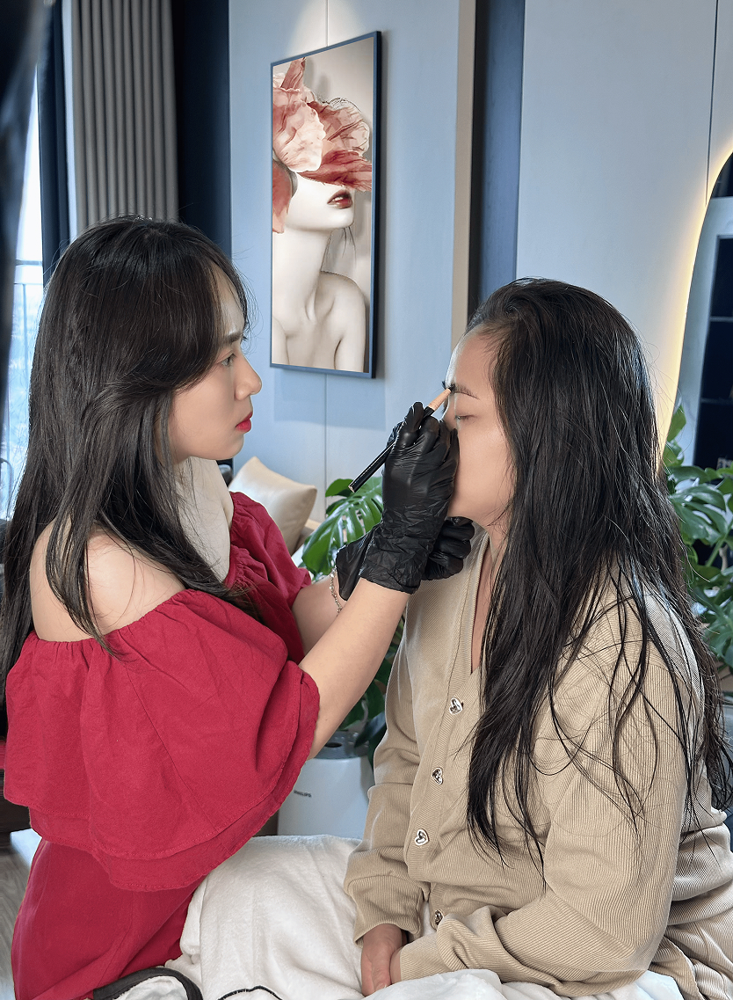

눈썹·립 PMU에서는 각 고객마다 피부 기저, 색소, 원하는 바가 다릅니다. 그래서 점점 더 많은 사람들이 프라이빗 1:1 스튜디오 모델을 찾고 있으며, 여기서는 경험이 개인화되고 각 고객에게 완전히 집중됩니다.
이 모델은 특히 원장이 직접 – 높은 실력과 오랜 경험을 갖춘 – 고객에게 상담하고 시술할 때 매우 적합합니다.
1. 프라이빗 경험 – 첫 방문부터 안심감 조성
눈썹·립 PMU는 얼굴에 직접 영향을 미치는 서비스이므로 프라이버시가 매우 중요한 역할을 합니다.
프라이빗 1:1 공간에서:
- 고객은 개인적인 선호도에 대해 충분히 논의할 시간을 가집니다
- 눈썹 모양, 립 색상, 어두운 색소 침착에 대한 우려를 편안하게 공유할 수 있습니다
- 주변 환경으로 인한 압박감이나 산만함이 없습니다
프라이버시는 고객이 전체 과정 동안 더 편안하고, 편안하며, 신뢰감을 느끼도록 도와줍니다.

2. 원장 직접 시술 – 일관되고 명확한 프로세스
프라이빗 1:1 모델의 주요 장점 중 하나는 전체 과정이 한 사람에 의해 수행된다는 것입니다:
✓ 초기 상담
✓ 얼굴 및 피부 기저 분석
✓ 눈썹 모양/립 색상 디자인
✓ 기술 실행
✓ 사후 관리
이것은 다음을 도와줍니다:
- 고객의 선호도를 명확히 이해
- 처음부터 끝까지 일관성 보장
- 고객이 정확히 누가 자신의 서비스를 수행하는지 알기 때문에 안심감 조성

3. 실력 & 경험 – PMU의 핵심 요소
눈썹·립 PMU에서 기술과 경험은 항상 가장 중요한 요소입니다. 수년간의 경험을 가진 사람들은 일반적으로 다음 능력을 갖추고 있습니다:
- 손의 압력을 잘 제어
- 피부 기저와 색소 침착을 유연하게 처리
- 각 얼굴에 맞게 색상 조정
- 자연스럽고 조화로운 색상 결과 보장
원장이 1:1 모델에서 직접 시술할 때, 각 세션은 높은 집중력과 명확한 책임감으로 세심하게 만들어집니다.
4. 철저한 상담 – 트렌드보다 적합성 우선
프라이빗 1:1 모델은 상담에 더 많은 시간을 할애할 수 있게 하여 고객이 다음을 이해하도록 도와줍니다:
- 눈썹/립의 현재 상태
- 적합한 개선 방안
- 얼굴과 조화를 이루는 색상과 디자인
일반적인 트렌드를 따르기보다는, 상담 과정은 최종 결과가 각 고객에게 가장 적합하고 자연스럽게 만드는 데 집중합니다.

5. 사후 관리 – 더 완전한 경험
전체 세션이 1:1로 수행될 때:
- 벗겨짐 및 색상 발현 후 추적이 더 편리합니다
- 고객은 추가 상담이 필요할 때 쉽게 소통할 수 있습니다
- 케어 및 터치업(필요한 경우) 프로세스가 명확합니다
이것은 고객이 더 안심하고 서비스 시점뿐만 아니라 전체 과정 동안 동행받는다고 느끼도록 도와줍니다.
왜 루미 뷰티는 프라이빗 1:1 스튜디오 모델을 선택할까?
루미 뷰티에서는 눈썹·립 PMU가 다음을 필요로 하는 서비스라고 믿습니다:
집중
탄탄한 실력
고객을 듣고 이해할 충분한 시간
따라서 루미 뷰티는 다음을 선택합니다:
- 프라이빗 1:1 스튜디오 모델
- 원장이 직접 상담하고 시술
- 품질 보장을 위해 하루 고객 수 제한
- 자연스럽고 조화롭고 오래 지속되는 스타일 우선
루미 뷰티는 빠르게 작업하거나 많은 고객을 처리하는 것을 목표로 하지 않고, 각 고객이 자신의 선택에 적합하고 편안하며 만족스럽다고 느끼도록 하는 것을 목표로 합니다.
🌟 루미 뷰티에서 프라이빗 1:1 눈썹·립 PMU 서비스를 경험하고 싶으신가요?
또는 팬페이지로 메시지를 보내 무료 1:1 상담을 받으세요.
📞 전화: 0364759261
📍 주소: Vo Quy Huan, FPT City Urban Area, Da Nang, Vietnam